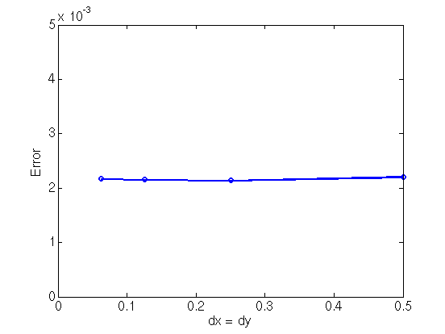
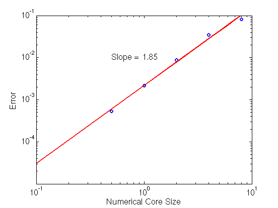
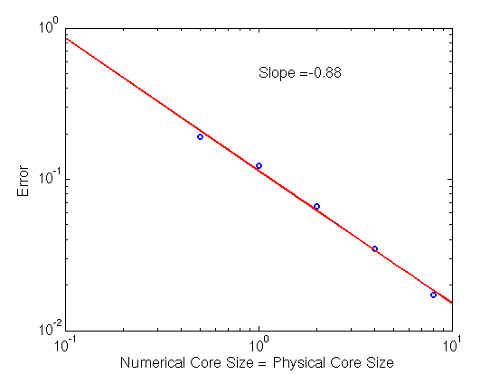
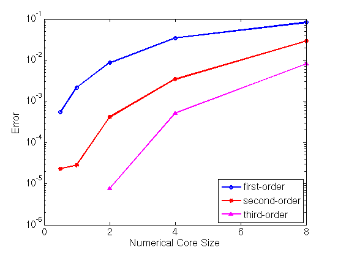

Effects of Numerical Core Size on Dislocation Stress Fields
Use of finite sized dislocation cores (i.e. smearing) in numerical
calculations causes deviations in the stress fields on the order of
the square of the numerical core radius. This deviation is negligible
far from the dislocation core but causes significant errors in the
stress fields near the dislocation core. While using a smaller
dislocation core size reduces the magnitude of the error throughout
the entire stress field, using the numerical core size as the physical
core size actually leads to errors near the dislocation core that
increase as the size of the numerical core is decreased (even with the
use of finer grids). The following results show the effects of the
numerical core on the error in the stress fields outside of the
numerical and physical dislocation core.
One of the motivations for investigating these errors further is that
they result in spurious forces between dislocation lines when they are
near each other. For instance, we have seen a nonzero force that should
be exactly zero (shown analytically) that leads to drift in a dislocation
model of a grain boundary. These spurious forces also cause an apparent
repulsive force between dislocations that should physically react to
form a single dislocation.
For all of the results, the dislocation configuration is taken to be
an array of edge dislocations with Burgers vector in the (1,0,0)
direction and line direction in the (0,0,1) direction. The array
ordered such that the normal to the plane of the dislocation array is
in the (1,0,0) direction. The dislocation array is periodically
repeated in the x-direction. The simulation cells is [-50,50]x[-40,40],
which implies that the inter-dislocation spacing is 80 and the
distance between periodic images of the dislocation array is 100.
NOTES:
- All calculations are on a uniform grid with dx = dy using the
Fourier transform formulation in Xiang et. al.
- The errors for the stress fields are only computed OUTSIDE of the
specified physical core.
- Larger versions of all figures on this page are available
by clicking on them.
- Code used to obtain these results are:
smeared_core_effects.m,
results.m
sigma_D.m
Effect of Grid Resolution
Refining the grid does not reduce the error. Once the grid resolution
is fine enough (does not need to be that fine thanks to the accuracy of
the FFT), the error in the stress is dominated by error caused by using a
smeared core.
|
Error in stress field outside the dislocation core is independent
of grid resolution. The physical and numerical core radii are
fixed at 4 and 1, respectively.
|

|
Dependence of Error on Numerical Core Size
The error caused by the finite core scales as the square of the numerical
core radius. We can intuitively understand the scaling of this error
by considering the representation of a single edge dislocation as a
decomposition of two dislocations each with half of the Burgers vector
of the original dislocation and separated by a distance equal to the core
radius. Using the perturbed positions of the two dislocations in the
formulas for the stress fields results in a leading order deviation of
the stress field at any position space that is on the order of the core
radius squared.
|
Error shows a roughly quadratic dependence on the numerical
core radius. Here the physical core radius is fixed at 4 and
the grid resolution is fixed at 0.25.
|

|
Increasing Error when Physical Core and Numerical Core are Equal
The choice of taking the physical core size to be the same as the
numerical core size leads to an error in the stress fields around the
dislocation core that increases with decreasing core size.
|
Error shows a roughly inverse dependence on the numerical
core radius. Here the grid resolution is fixed at 0.25.
|

|
Improved Accuracy Near Core Using Higher-order Smoothed Delta Functions
Higher-order smoothed delta functions can be used decrease the error caused
by the smeared core. They decrease the error by concentrating the
distribution of the smeared core near the true position of the dislocation
core. However, a larger number of grid points are required
to resolve the numerical core when higher-order smoothed delta functions
are used. Second-order delta functions seem to give a reasonable compromise
between accuracy in the stress fields and the grid spacing required to resolve
the numerical core.
- First-order smoothed delta functions require ~6 grid cells within the
dislocation core (core radius = 3 grid cells) to eliminate inaccuracies
due to grid resolution.
- Second-order smoothed delta functions require ~8-12 grid cells within the
dislocation core (core radius = 4-6 grid cells) to eliminate inaccuracies
due to grid resolution.
- Third-order smoothed delta functions require ~24-48 grid cells within the
dislocation core (core radius = 12-24 grid cells) to eliminate
inaccuracies due to grid resolution.
The following results were obtained on a grid with dx = dy = 0.125 for
first- and second-order smoothed delta functions and dx = dy = 0.041667
for the third-order smoothed delta function to remove grid resolution
inaccuracies.
|
Comparison of the error for first-, second-, and third-order smoothed
delta functions as a function of numerical core size.
Here the physical core radius is fixed at 4.
|

|
Summary/Conclusions
When doing dislocation dynamics simulations, the stress field calculations
should use a numerical core that is many times smaller than the desired
physical core. Based on these computational experiments with a physical
core radius on the order of a few times the Burgers vector and when
using the first-order smoothed delta function to smear the core, the
numerical core should be about 10 times smaller for the error in the
stress fields to be on the order of 1e-4. When the second-order smoothed
delta function is used, the numerical core can be taken to be larger (on
the order of 2 to 4 times smaller than physical core) to achieve the same
accuracy.
Based on the results of these computational experiments, we should
be using second-order smoothed delta functions with a numerical core that
is about 2 to 4 times smaller than the physical core radius. This implies
the use of a grid resolution that places at least 10-20 grid points
within the radius of the desired physical dislocation core.
{kind=link}
{kind=link}
{kind=link}
{kind=link}